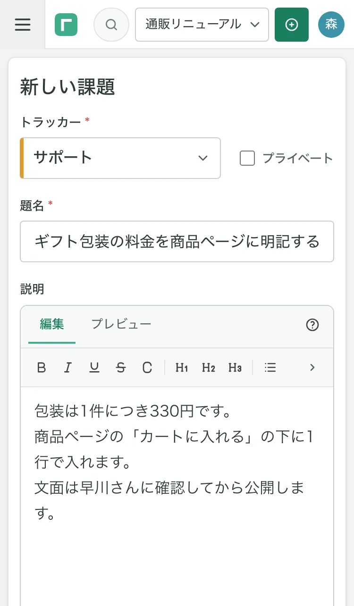
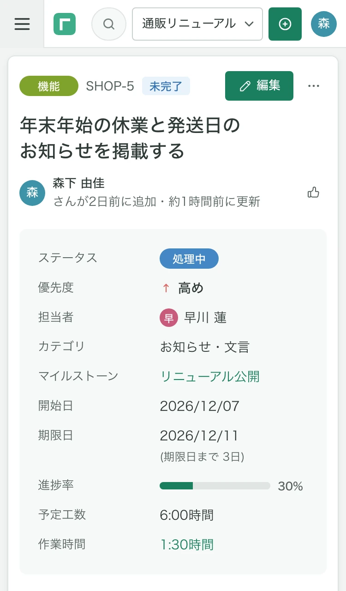
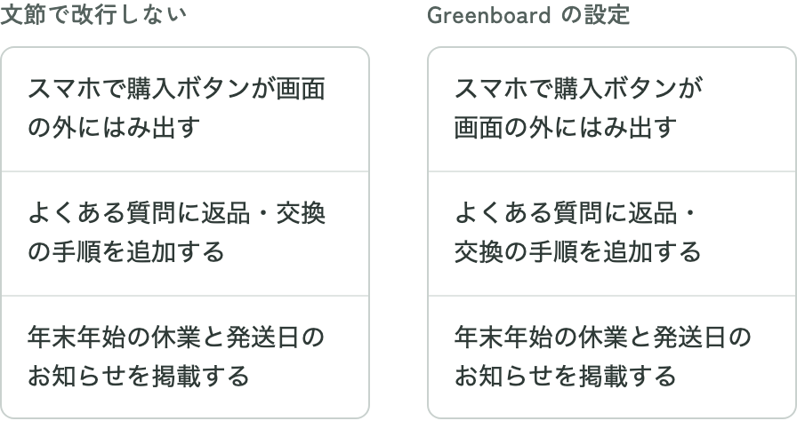
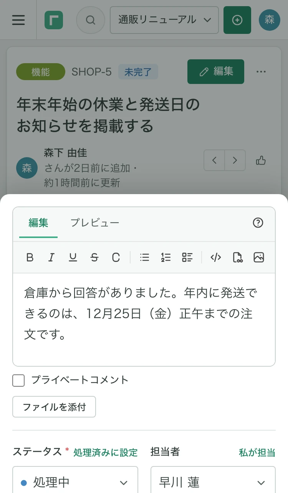
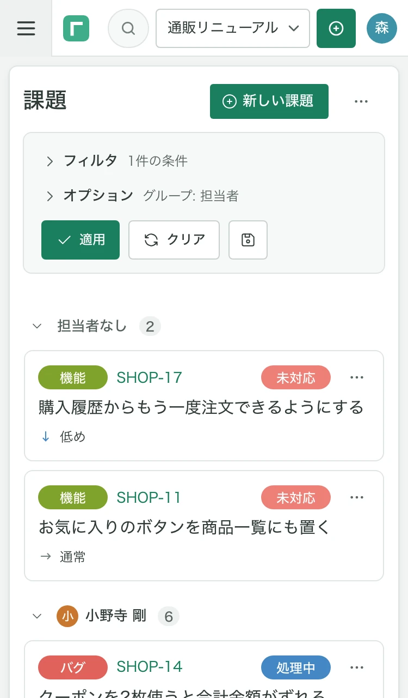
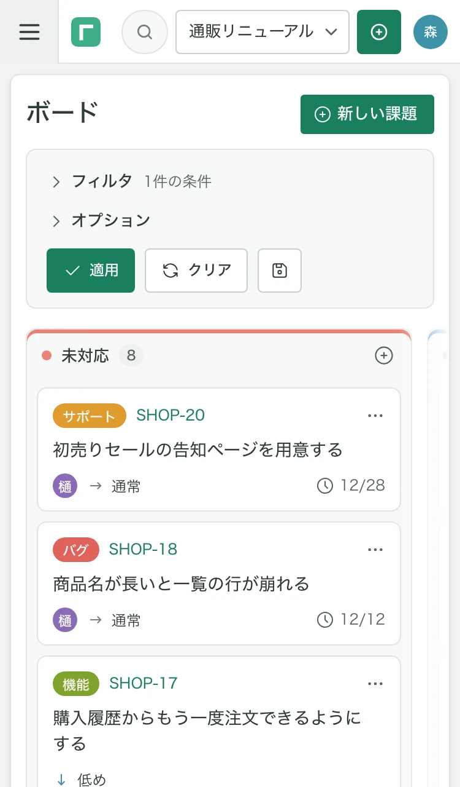
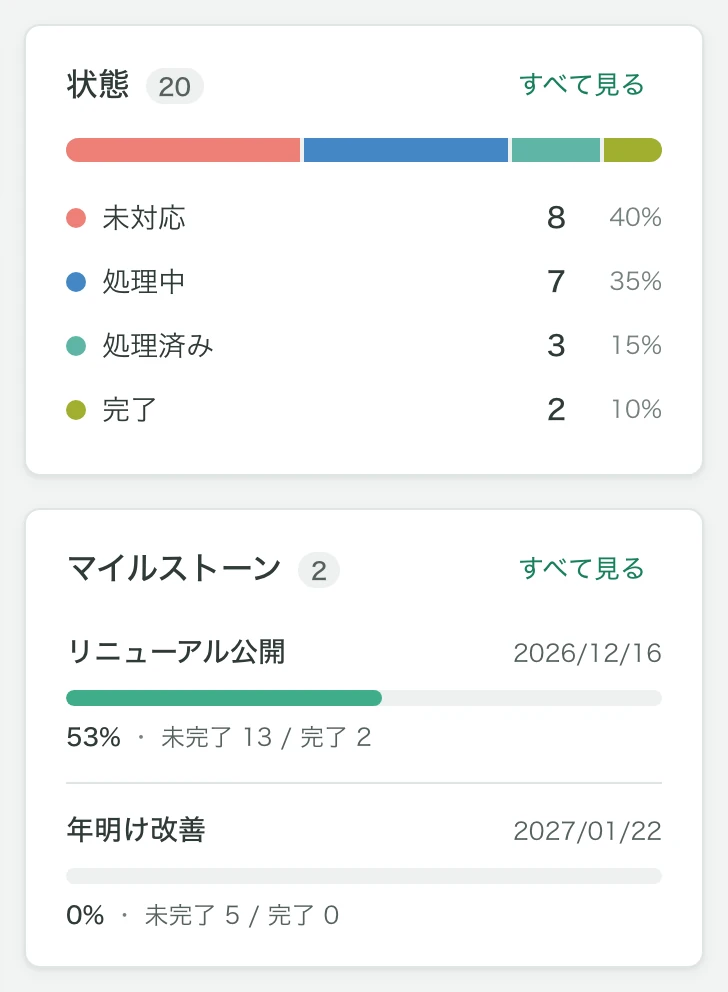
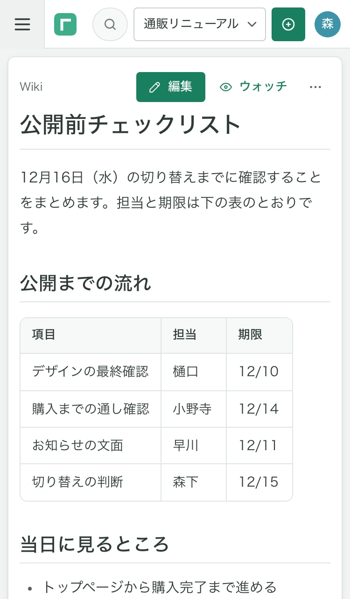

上から順に書けば終わる入力フォーム
項目名は入力欄の上に置き、題名は大きく、属性は2列にまとめました。まだ選んでいない項目は「未設定」と出ます。⌘ または Ctrl を押しながら Enter で作成できます。

Greenboard は Redmine 6 用の無料テーマです。「チケット」を「課題」と呼び替え、題名は文節の切れ目で折り返します。エンジニアでない人も毎日開く画面として作りました。

Redmine の日本語には、開発の現場の言い方が残っています。同梱のプラグインが、画面のことばを職場でふだん使う言い方に置き換えます。
| Redmine 標準 | Greenboard | どこが変わるか |
|---|---|---|
| 課題 | 「新しい課題」「子課題」「関連する課題」など、画面全体で置き換わります。 | |
| マイルストーン | 課題の項目、ロードマップ、設定画面まで同じ呼び方です。 | |
| 期限日 | 課題とマイルストーンの締め切りです。 | |
| ダッシュボード | 自分の担当と最近の更新が並ぶ、自分用の画面です。 | |
| SHOP-5 | プロジェクトの識別子と番号を組み合わせた「キー」で課題を呼びます。 | |
| （空欄） | 未設定 | 担当者やカテゴリを選んでいないとき、空欄のままにしません。 |
上の4つは同梱のプラグイン redmine_greenboard が置き換えます。Redmine 本体の翻訳ファイルは書き換えません。
題名が2行になるとき、ことばの途中で切れないようにしました。どの要素をどう折り返すかは1つのファイルにまとめ、画面ごとにばらつかないようにしています。このページの見出しも同じ規則で組んでいます。
文節で改行しない
スマホで購入ボタンが画面の外にはみ出す
よくある質問に返品・交換の手順を追加する
年末年始の休業と発送日のお知らせを掲載する
Greenboard の設定
スマホで購入ボタンが画面の外にはみ出す
よくある質問に返品・交換の手順を追加する
年末年始の休業と発送日のお知らせを掲載する

このブラウザは文節での改行に対応していないため、Chrome での表示を画像で載せています。
項目名は入力欄の上に置き、題名は大きく、属性は2列にまとめました。まだ選んでいない項目は「未設定」と出ます。⌘ または Ctrl を押しながら Enter で作成できます。

課題の下にある「コメントを追加…」を押すと、その場に入力欄が開きます。ステータス、担当者、マイルストーン、期限日も同じ場所で変えられます。

トラッカーとステータスは色つきのラベル、優先度は矢印で示します。課題はキーで呼び、題名は2行まで表示します。

ステータスの列と担当者の行でカードを並べます。期限を過ぎた日付は赤で示します。ボードを使うには redmine_issues_panel プラグインが必要です。

プロジェクトの概要に、ステータスごとの件数、マイルストーンの進み具合、最近の更新を並べます。更新は「今日」「昨日」の見出しと時刻で追えます。この表示には同梱のプラグインが必要です。

見出しの大きさに差をつけ、行間を広く取りました。表、引用、コードにもそれぞれの体裁があります。右側にはページの一覧が出ます。

一覧は1件ずつのカードになり、絞り込みは「1件の条件」のように1行にたたまれます。左のメニューは引き出しに入ります。
redmine_issues_panel（v1.2.2で確認しています）themes/greenboard を Redmine の themes/ に、plugins/redmine_greenboard を plugins/ にコピーします。redmine_issues_panel を plugins/ に入れます。| テーマだけ | プラグインも入れる | |
|---|---|---|
| 見た目と文字組み | 変わります | 変わります |
| ことばの言い換え（チケット→課題 など） | 変わりません | 変わります |
| ダッシュボードのブロックと、プロジェクトの概要の表示 | 出ません | 出ます |
次の設定を前提に作っています。必須ではありません。ステータス名は「未対応」「処理中」「処理済み」「完了」、ユーザー名の表示は「姓 名」、言語は日本語です。
git clone https://github.com/nerosui/greenboard-redmine-theme.git
cd greenboard-redmine-theme
cp docker/.env.example docker/.env
docker compose -f docker/compose.example.yaml up -d --build
docker/.env に DB_PASSWORD と SECRET_KEY_BASE を設定してから起動してください。http://localhost:3000 を開き、管理者でログインしてテーマを選びます。